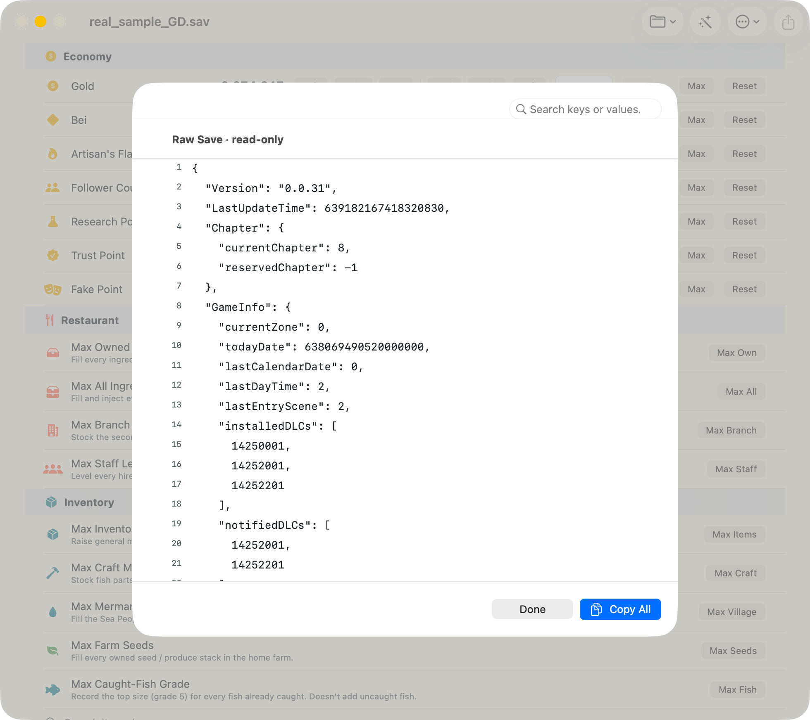

Cheat Engine alternative for Mac — Dave the Diver
Cheat Engine is Windows-only. There is no Mac build, and the workarounds people suggest mostly don't work on modern macOS. For a single-player game like Dave the Diver, though, you probably don't want a memory trainer at all — you want a save editor. Here's the honest difference.
The short answer
Cheat Engine does not run on macOS. Its native replacement for Dave the Diver is a save editor: it changes values in the save file on disk while the game is closed, instead of scanning and patching a running game's memory. For a single-player game that's simpler, safer, reversible — and it doesn't need any of the privileges memory editing requires.
DiveSaveEd is a free, open-source, native macOS save editor for exactly that. macOS 14+, Apple Silicon and Intel.
Why Cheat Engine doesn't work on a Mac
Cheat Engine is a Windows application built around Windows APIs for attaching to another process and reading and writing its memory. Several things stand in the way on macOS:
- There's no macOS build. Not "hard to find" — it doesn't exist.
- Running it under Wine/CrossOver doesn't get you far. Even when the Cheat Engine window opens, the debugger and memory-scanning parts depend on Windows kernel behaviour that the translation layer doesn't reproduce; and the game you'd want to attach to is a separate native macOS process it can't see anyway.
- macOS gates process memory access. System Integrity Protection, hardened runtime, and the debugging entitlement model mean one app cannot casually read or write another app's memory. Tools that do this need elevated privileges and explicit user approval, and get broken by every OS update.
- A Windows VM doesn't help either — the Windows copy of the game inside the VM has its own separate save, unrelated to the Mac one you actually play.
The projects usually named as "Cheat Engine for Mac" — Bit Slicer, iGG and friends — are genuine memory scanners, but they're general-purpose, they require granting an app debugger-level access to your machine, and they only work while the game is running. That's a lot of exposure for something you can accomplish by editing a file.
Memory trainer vs. save editor
They solve the same problem from opposite ends:
| Memory trainer (Cheat Engine) | Save editor (DiveSaveEd) | |
|---|---|---|
| What it edits | The game's RAM while it runs | The save file on disk while the game is closed |
| Game must be running | Yes — it attaches to the process | No — it refuses to write if the game is open |
| How you find a value | Scan, change it in-game, re-scan, narrow down, guess at addresses | Pick the field by name from a list |
| Survives a game update | Often not — addresses and offsets move | Generally yes — it works on the save format, not on code layout |
| Undo | Restart the game and hope you didn't save | In-app undo, plus a timestamped backup of every write |
| Privileges needed | Debugger-level access to another process | Read/write on one file in your own home folder |
| Live effects (godmode, speed) | Possible — that's its advantage | Not possible, by design |
| Runs on macOS | No | Yes — native, universal, signed and notarized |
To be straight about the trade-off: a save editor genuinely cannot do everything a trainer can. Real-time effects — freezing oxygen, infinite ammo, movement speed — live in memory and vanish when you close the game, so they're out of scope. What a save editor can do is everything that's persisted: currencies, inventory, ingredients, item counts, staff levels. In Dave the Diver, that covers virtually every reason people reach for a trainer in the first place, since the grind is in the resources, not in the combat.
What DiveSaveEd does instead
It opens your save, decodes it, shows you the values, writes them back, and closes. It never attaches to the game process, never reads or writes game memory, never touches the game executable, and makes no network calls of any kind — no account, no telemetry, no update pings.
-
Currencies
Gold, Bei, Artisan's Flame, Research Point, Cooksta Follower Count, Trust and Fake points — nudge by ±10 / 100 / 1000, type an exact value, or set the maximum. Walkthrough →
-
Bulk fills
Restaurant ingredients (DLC-aware), branch stock, staff levels, general items, craft materials, Sea People village, farm seeds, caught-fish grade — or Max Everything at once.
-
Any single item, by name
A built-in item database, so you search for what you want rather than reverse-engineering numeric IDs — the save-editing equivalent of Cheat Engine's pointer hunt, minus the hunt.
-
Reversible by design
In-app undo for bulk actions, a change preview before anything is written, and a timestamped backup of every write with a restore window.


There's a raw inspector, but it's read-only
If what you liked about Cheat Engine was poking at the guts, the raw inspector lets you search the entire decoded save as formatted JSON. It's deliberately read-only: hand-editing raw values can set progression flags out of order and soft-lock a run. Looking is free; editing goes through the fields that are known to be safe.

Will this get me banned?
No. Dave the Diver is a single-player game with no multiplayer, no leaderboards, and no anti-cheat software. This tool edits a file on your own computer while the game is closed. It never attaches to the game process, never reads or writes game memory, and never touches the game executable — which is, incidentally, precisely the set of behaviours anti-cheat systems in other games look for.
The realistic risk isn't a ban; it's a broken save. That's why every write is backed up first, every bulk action is undoable, and the raw editor is locked. See the FAQ for the specifics.
Get it
Download DiveSaveEd — free Read the source
macOS 14+, Apple Silicon and Intel. Signed and notarized by Apple. MIT licensed, no ads, no network.
Related
-
Where is the save file on macOS?
Both paths, the hidden
~/Libraryfolder, and how to back one up. -
Max Gold, Bei & Artisan's Flame
The practical walkthrough, with undo and backups.
-
FAQ
Bans, disappearing edits, Intel Macs, non-English saves, DLC and undo.